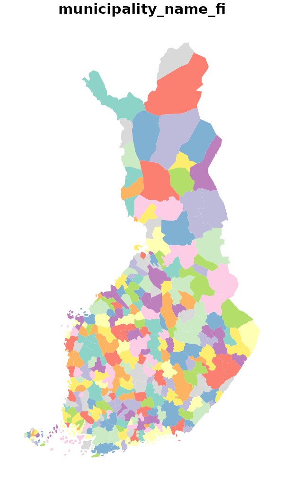
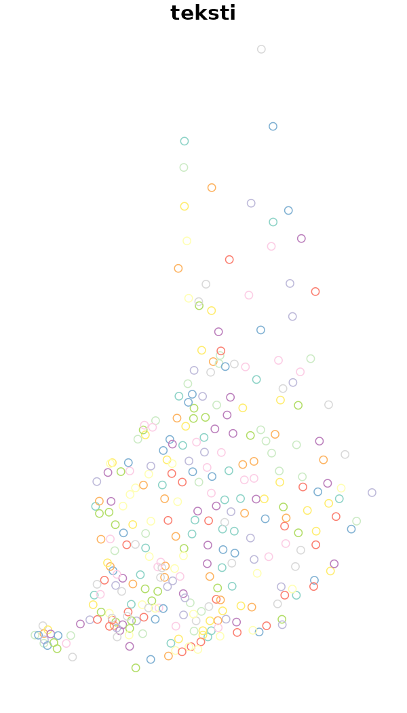
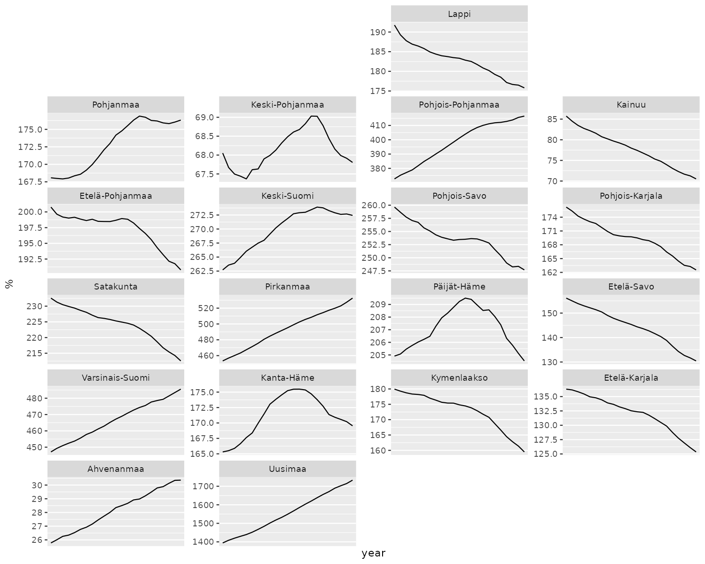

Datasets in geofi-package
Markus Kainu, Leo Lahti & Joona Lehtomäki
2025-05-05
Source:vignettes/geofi_datasets.Rmd
geofi_datasets.Rmdgeofi-package provides access to multiple
dataset of different types and for different use. In this vignette we
introduce the different datas and explain their use cases. Vignette
Making maps using geofi-package provides multiple
real-world examples of their usage.
Packages installation
geofi can be installed from CRAN using
# install from CRAN
install.packages("geofi")
# Install development version from GitHub
remotes::install_github("ropengov/geofi")Municipality keys
Official administrative regions in Finland are based on
municipalities. In 2021 there are 309 municipalities in Finland and the
number is decreasing over time through mergers.
Each municipality belongs to a higher level regional classifications
such as regions (maakunta) or health care districts (sairaanhoitopiiri).
municipality_key_-datasets are based on Statistics Finland
Statistical
classification -api with few modification and provided on yearly
basis.
library(geofi)
library(dplyr)
d <- data(package = "geofi")
as_tibble(d$results) |>
select(Item,Title) |>
filter(grepl("municipality_key", Item))
#> # A tibble: 14 × 2
#> Item Title
#> <chr> <chr>
#> 1 municipality_key Aggregated municipality key table for years 2013-2025
#> 2 municipality_key_2013 municipality_key_2013
#> 3 municipality_key_2014 municipality_key_2014
#> 4 municipality_key_2015 municipality_key_2015
#> 5 municipality_key_2016 municipality_key_2016
#> 6 municipality_key_2017 municipality_key_2017
#> 7 municipality_key_2018 Municipality key table for 2018
#> 8 municipality_key_2019 Municipality key table for 2019
#> 9 municipality_key_2020 Municipality key table for 2020
#> 10 municipality_key_2021 Municipality key table for 2021
#> 11 municipality_key_2022 Municipality key table for 2022
#> 12 municipality_key_2023 Municipality key table for 2023
#> 13 municipality_key_2024 Municipality key table for 2024
#> 14 municipality_key_2025 Municipality key table for 2025Looking at the names of `municipality_key_2023` there is 69 different variables from each municipality.
names(geofi::municipality_key_2023)
#> [1] "kunta" "municipality_name_fi"
#> [3] "municipality_name_sv" "municipality_name_en"
#> [5] "kuntaryhmitys_code" "kuntaryhmitys_name_fi"
#> [7] "kuntaryhmitys_name_sv" "kuntaryhmitys_name_en"
#> [9] "avi_code" "avi_name_fi"
#> [11] "avi_name_sv" "avi_name_en"
#> [13] "ely_code" "ely_name_fi"
#> [15] "ely_name_sv" "ely_name_en"
#> [17] "kielisuhde_code" "kielisuhde_name_fi"
#> [19] "kielisuhde_name_sv" "kielisuhde_name_en"
#> [21] "tyossakayntial_code" "tyossakayntial_name_fi"
#> [23] "maakunta_code" "maakunta_name_fi"
#> [25] "maakunta_name_sv" "maakunta_name_en"
#> [27] "seutukunta_code" "seutukunta_name_fi"
#> [29] "seutukunta_name_sv" "seutukunta_name_en"
#> [31] "year" "suuralue_code"
#> [33] "suuralue_name_fi" "suuralue_name_sv"
#> [35] "suuralue_name_en" "nuts1_code"
#> [37] "nuts1_name_fi" "nuts1_name_sv"
#> [39] "nuts1_name_en" "nuts2_code"
#> [41] "nuts2_name_fi" "nuts2_name_sv"
#> [43] "nuts2_name_en" "nuts3_code"
#> [45] "nuts3_name_fi" "nuts3_name_sv"
#> [47] "nuts3_name_en" "vaalipiiri_code"
#> [49] "vaalipiiri_name_fi" "vaalipiiri_name_sv"
#> [51] "vaalipiiri_name_en" "hyvinvointialue_code"
#> [53] "hyvinvointialue_name_fi" "hyvinvointialue_name_sv"
#> [55] "hyvinvointialue_name_en" "tyossakayntial_name_sv"
#> [57] "tyossakayntial_name_en" "yhteistyoalue_code"
#> [59] "yhteistyoalue_name_fi" "yhteistyoalue_name_sv"
#> [61] "yhteistyoalue_name_en" "municipality_code"
#> [63] "kunta_name" "name_fi"
#> [65] "name_sv"With these municipality keys you can easily aggregate municipalities
for plotting or you can list different regional breakdowns.
geofi::municipality_key_2023 |>
count(maakunta_code,maakunta_name_fi,maakunta_name_sv,maakunta_name_en)
#> # A tibble: 19 × 5
#> maakunta_code maakunta_name_fi maakunta_name_sv maakunta_name_en n
#> <int> <chr> <chr> <chr> <int>
#> 1 1 Uusimaa Nyland Uusimaa 26
#> 2 2 Varsinais-Suomi Egentliga Finland Southwest Finland 27
#> 3 4 Satakunta Satakunta Satakunta 16
#> 4 5 Kanta-Häme Egentliga Tavastland Kanta-Häme 11
#> 5 6 Pirkanmaa Birkaland Pirkanmaa 23
#> 6 7 Päijät-Häme Päijänne-Tavastland Päijät-Häme 10
#> 7 8 Kymenlaakso Kymmenedalen Kymenlaakso 6
#> 8 9 Etelä-Karjala Södra Karelen South Karelia 9
#> 9 10 Etelä-Savo Södra Savolax South Savo 12
#> 10 11 Pohjois-Savo Norra Savolax North Savo 19
#> 11 12 Pohjois-Karjala Norra Karelen North Karelia 13
#> 12 13 Keski-Suomi Mellersta Finland Central Finland 22
#> 13 14 Etelä-Pohjanmaa Södra Österbotten South Ostrobothn… 18
#> 14 15 Pohjanmaa Österbotten Ostrobothnia 14
#> 15 16 Keski-Pohjanmaa Mellersta Österbotten Central Ostrobot… 8
#> 16 17 Pohjois-Pohjanmaa Norra Österbotten North Ostrobothn… 30
#> 17 18 Kainuu Kajanaland Kainuu 8
#> 18 19 Lappi Lappland Lapland 21
#> 19 21 Ahvenanmaa Åland Åland 16Municipality keys are joined with the municipality spatial data by
default, meaning that data returned by get_municipality()
can be aggregated as it is.
Spatial data
Spatial data is provided as administrative regions (polygons), population and statistical grids (polygons) and municipality centers (points).
Municipality borders
Municipality borders are provided yearly from 2013 and in two scales
1: 1 000 000 and 1:4 500 000. Use 1000 or 4500
as value for scale-argument, respectively.
municipalities <- get_municipalities(year = 2023, scale = 4500)
plot(municipalities["municipality_name_fi"], border = NA)
Municipality borders with population
In 2022 a new data source is introduced that provides you municipality borders with municipality population data. Spatial data is provided in 1:4 500 000 scale.
Calling the function with year = 2019 returns population data from 2019-12-31 with spatial data on borders from 2020.
The statistical variables in the data are: total population (vaesto), share of the total population (vaesto_p), number of men (miehet), men’s share of the population in an area (miehet_p) and women (naiset), women’s share (naiset_p), those aged under 15: number (ika_0_14), share (ika_0_14p), those aged 15 to 64: number (ika_15_64), share (ika_15_64p), and aged 65 or over: number (ika_65_), share (ika_65_p).
To plot men’s share at the municipality level in 2020 (2021 municipality borders) you can simply to this.
get_municipality_pop(year = 2022) |>
subset(select = miehet_p) |>
plot()Aggregating the absolute population numbers is straightforward: to plot population at Wellbeing service county level you can do.
get_municipality_pop(year = 2022) |>
group_by(hyvinvointialue_name_fi) |>
summarise(vaesto = sum(vaesto)) |>
select(vaesto) |>
plot()To plot the men’s share at wellbeing service country level you have to add one more step
Zipcodes
Zipcodes are provided in a single resolution from 2015.
zipcodes <- get_zipcodes(year = 2023)
plot(zipcodes["nimi"], border = NA)Statistical grid
Grid net for statistics both in 1 km x 1 km and 5 km x 5km covers whole of Finland. The grid net includes all grid squares in Finland.
Statistics Finland proprietary grid database provides the attribute statistical data for these grid nets.
stat_grid <- get_statistical_grid(resolution = 5, auxiliary_data = TRUE)
plot(stat_grid["euref_x"], border = NA)Population grid
Number of population by both 1 km x 1 km and 5 km x 5 km grids. The number of population on the last day of the reference year (31 December) by age group. Data includes only inhabited grids. The statistical variables of the data are:
Total population (vaesto), number of men
(miehet) and women (naiset), under 15 year
olds (ika_0_14), 15-64 year olds (ika_15_64),
and aged over 65 (ika_65_). Only the number of population
is reported for grids of under 10 inhabitants. See Population
grid data.
The data describes the population distribution independent of administrative areas (such as municipal borders). The data is suitable for examination of population distribution and making various spatial analysis.
pop_grid <- get_population_grid(year = 2018, resolution = 5)
plot(pop_grid["kunta"], border = NA)Central localities of municipalities
National Land Survey of Finland maintains Topological Database that contains a wide range of layers from which you can access the locations of central localities of each municipality in Finland.
plot(municipality_central_localities()["teksti"])
Custom geofacet grid data
From Ryan Hafen’s blog:
The geofacet package extends ggplot2 in a way that makes it easy to create geographically faceted visualizations in R. To geofacet is to take data representing different geographic entities and apply a visualization method to the data for each entity, with the resulting set of visualizations being laid out in a grid that mimics the original geographic topology as closely as possible.
geofi-package contains custom grids to be used with
various Finnish administrative breakdowns as listed below.
d <- data(package = "geofi")
as_tibble(d$results) |>
select(Item,Title) |>
filter(grepl("grid", Item)) |>
print(n = 100)
#> # A tibble: 22 × 2
#> Item Title
#> <chr> <chr>
#> 1 grid_ahvenanmaa custom geofacet grid for Ahvenanmaa region
#> 2 grid_etela_karjala custom geofacet grid for Etelä-Karjala region as in 2…
#> 3 grid_etela_pohjanmaa custom geofacet grid for Etelä-Pohjanmaa
#> 4 grid_etela_savo custom geofacet grid for Etelä-Savo
#> 5 grid_hyvinvointialue custom geofacet grid for Wellbeing services counties
#> 6 grid_kainuu custom geofacet grid for Kainuu region
#> 7 grid_kanta_hame custom geofacet grid for Kanta-Häme region
#> 8 grid_keski_pohjanmaa custom geofacet grid for Keski-Pohjanmaa region
#> 9 grid_keski_suomi custom geofacet grid for Keski-Suomi region as in 2020
#> 10 grid_kymenlaakso custom geofacet grid for Kymenlaakso region
#> 11 grid_lappi custom geofacet grid for Lappi region as in 2020
#> 12 grid_maakunta custom geofacet grid for regions
#> 13 grid_paijat_hame custom geofacet grid for Päijät-Häme region
#> 14 grid_pirkanmaa custom geofacet grid for Pirkanmaa region
#> 15 grid_pohjanmaa custom geofacet grid for Pohjanmaa region
#> 16 grid_pohjois_karjala custom geofacet grid for Pohjois-Karjala region
#> 17 grid_pohjois_pohjanmaa custom geofacet grid for Pohjois-Pohjanmaa region
#> 18 grid_pohjois_savo custom geofacet grid for Pohjois-Savo region
#> 19 grid_sairaanhoitop custom geofacet grid for health care districts
#> 20 grid_satakunta custom geofacet grid for Satakunta region
#> 21 grid_uusimaa custom geofacet grid for Uusimaa region
#> 22 grid_varsinais_suomi custom geofacet grid for Varsinais-Suomi regionHere is an example where population data at municipality level is
pulled from THL from 2000 to 2022, then aggregated at the levels of
regions (maakunta) and then plotted with ggplot2 using grid
geofi::grid_maakunta. Population data is provided as part
of geofi package as geofi::sotkadata_population.
# Let pull population data from THL
sotkadata <- geofi::sotkadata_population
# lets aggregate population data
dat <- left_join(geofi::municipality_key_2023 |> select(-year),
sotkadata) |>
group_by(maakunta_code, maakunta_name_fi,year) |>
summarise(population = sum(primary.value, na.rm = TRUE)) |>
na.omit() |>
ungroup() |>
rename(code = maakunta_code, name = maakunta_name_fi)
library(geofacet)
library(ggplot2)
ggplot(dat, aes(x = year, y = population/1000, group = name)) +
geom_line() +
facet_geo(facets = ~name, grid = grid_maakunta, scales = "free_y") +
theme(axis.text.x = element_text(size = 6)) +
scale_x_discrete(breaks = seq.int(from = 2000, to = 2023, by = 5)) +
labs(title = unique(sotkadata$indicator.title.fi), y = "%")